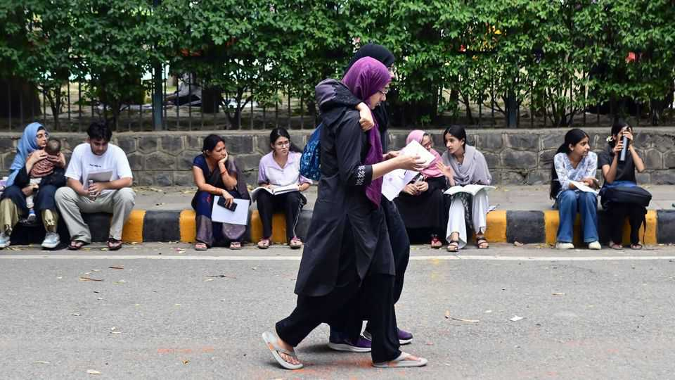
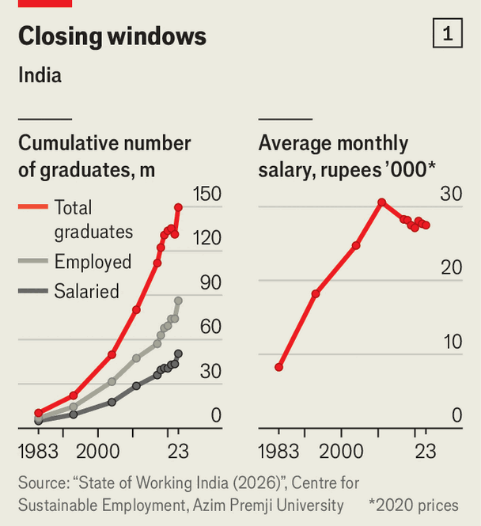
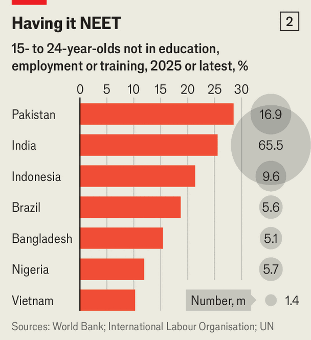

Behind India’s protests is a crisis in the graduate-jobs market
Fixing the exam system will not solve that

Jul 30th 2026
ONE STATISTIC illustrates the frustrations of India’s educated young, so vividly expressed on the streets of Delhi and elsewhere in recent weeks. Research by the Azim Premji University in Bangalore shows that each year between 2004 and 2023 roughly 5m graduates were added to the workforce; but the number in employment rose by only about 2.8m. That was not the issue that drew the crowds. But it helps explain why the one that did—the leaking of a public exam paper for graduates—rouses such passions. The youngsters wanted the country’s education minister to resign. After weeks of resistance, on July 25th Narendra Modi, the prime minister, caved in and the minister quit.

Millions of young Indians spend years slogging away at tests, in which the odds of success are barely improving. Last year 2.2m students sat the one for medical schools, chasing just 126,600 places. Another exam, for low-level government positions, drew some 2.8m applicants for about 15,000 posts. The leaks of important exams are affecting more and more young people. Since 2016 there have been at least 80, involving more than 20m students, estimates Sujay Nadkarni, a data analyst. The government has announced—not for the first time—moves to clean up the exam system.
Even more than the leaks, it is exams’ growing and enduring importance that should worry policymakers. Young Indians persist in trying to win in this rickety system because the alternative—finding a job in the market—is even harder. Of the young people who report themselves unemployed, fewer than 7% of graduates find permanent salaried work within a year.
All of this threatens the compact that has long underpinned Indian society: study, and success will follow. Education-fuelled aspirations have pushed enrolment in tertiary education to 30% of 18- to 23-year-olds, while the number of higher-education institutions has grown from 6,000 to around 70,000 in the span of 30 years, thanks to a boom in private education.

Yet economists worry that around 45% of Indian graduates have degrees in arts or commerce rather than, say, engineering or medicine. A report by a business body in 2024 estimated that only 55% of India’s graduates were employable. Industrial training institutes provide vocational training. But researchers at Azim Premji University found that their locations are poorly related to where manufacturing firms are. And more serious than the availability of qualified workers is the shortage of jobs. Between 2021 and 2024, India added 83m, but around half were on farms. India’s factories and offices are not employing enough labour—graduates or not.
India is not alone in facing these issues. Youth unemployment is high across South and South-East Asia. China is grappling with a graduate glut. But India’s youth cohort (those aged 15 to 29) is the world’s largest, at around 370m, and is expected to keep growing until 2030 at least. Absorbing this labour force is a formidable economic challenge. As this summer has shown, it is a political one, too. ■
Stay on top of our India coverage by signing up to Essential India, our free weekly newsletter.